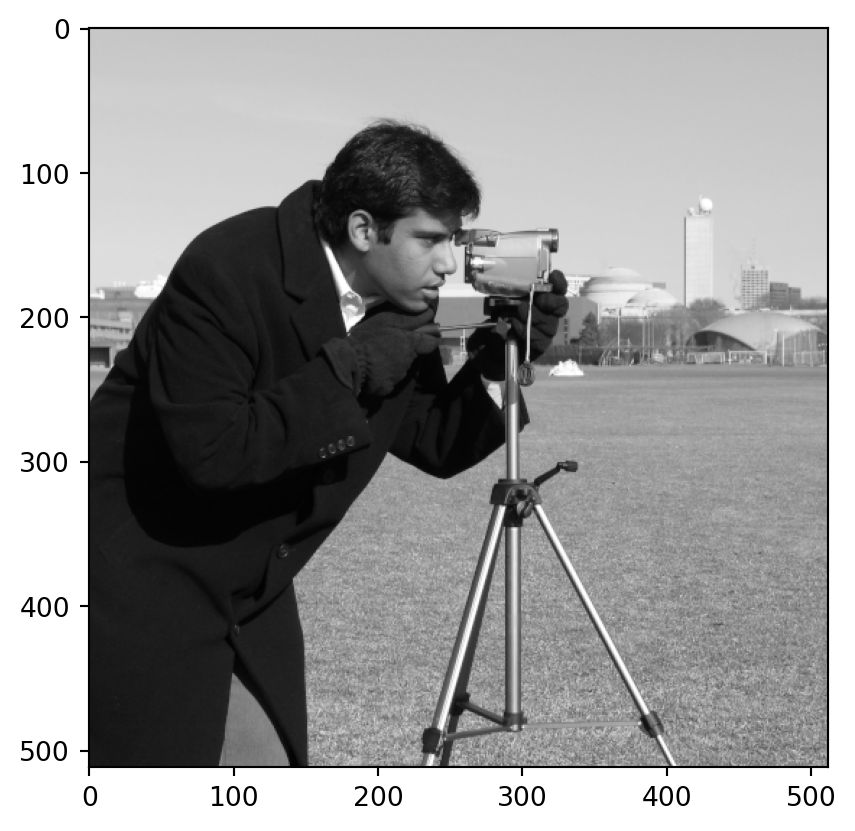
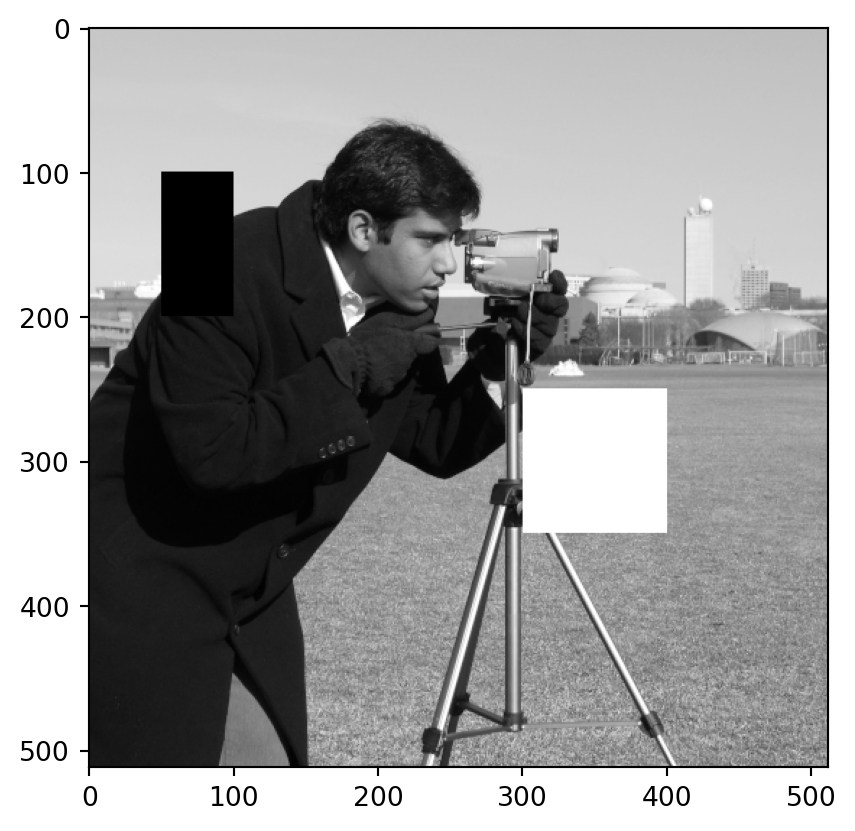
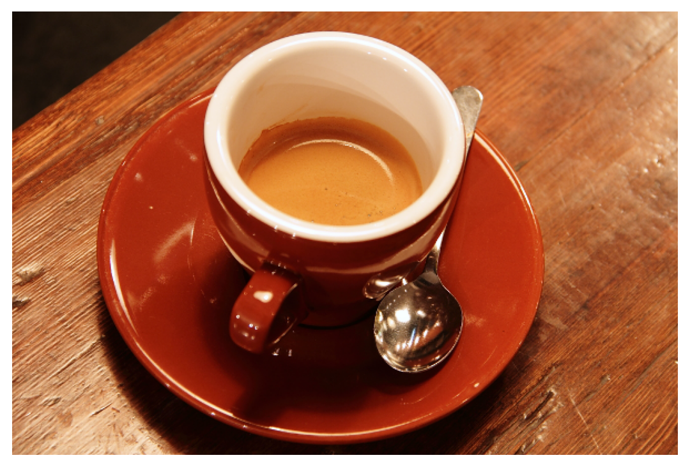
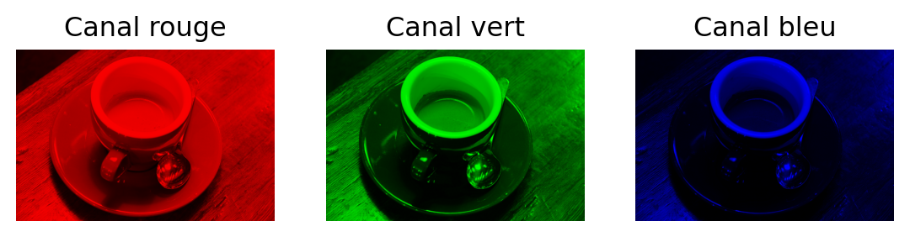
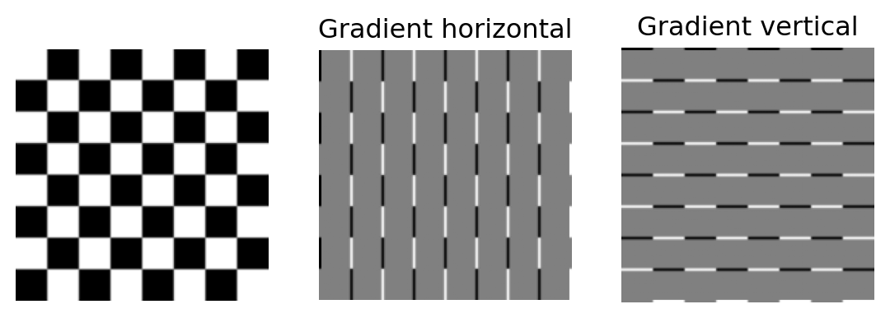
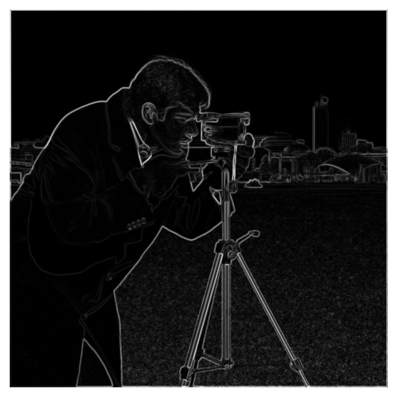
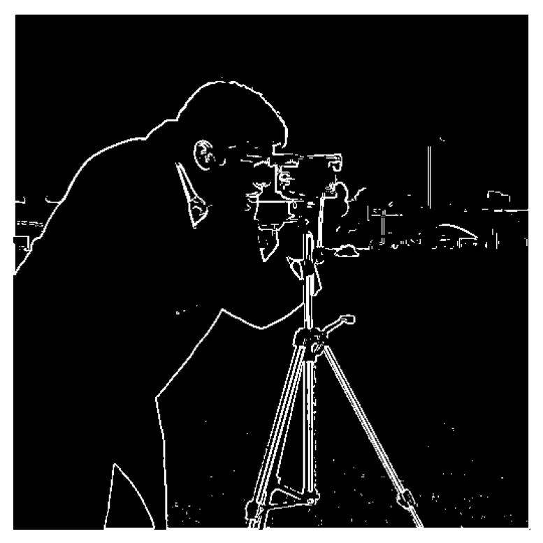

import imageio.v3 as io
import matplotlib.pyplot as plt
import numpy as np
img = np.array(io.imread('imageio:camera.png'))
plt.imshow(img, cmap='gray');
Une image en niveaux de gris est représentée par un tableau à deux dimensions. Chaque case de ce tableau est appelée pixel. Dans une image en niveaux de gris, les valeurs des pixels varient généralement entre \(0\) (noir) et \(255\) (noir).
import imageio.v3 as io
import matplotlib.pyplot as plt
import numpy as np
img = np.array(io.imread('imageio:camera.png'))
plt.imshow(img, cmap='gray');
img.shape(512, 512)Les lignes d'une image sont traditionellement numérotées du haut vers le bas.img[100:200, 50:100] = 0
img[250:350, 300:400] = 255
plt.imshow(img, cmap='gray');
Une image en couleurs est représentée par trois tableaux à deux dimensions de même taille : un pour le canal rouge, un pour le canal vert et un pour le canal bleu.
img = np.array(io.imread('imageio:coffee.png'))
plt.imshow(img)
plt.axis('off');
img.shape(400, 600, 3)rouge = img.copy()
rouge[:,:,1] = rouge[:,:,2] = 0
plt.subplot(1, 3, 1)
plt.gca().set_title('Canal rouge')
plt.imshow(rouge)
plt.axis('off');
vert = img.copy()
vert[:,:,0] = vert[:,:,2] = 0
plt.subplot(1, 3, 2)
plt.gca().set_title('Canal vert')
plt.imshow(vert)
plt.axis('off');
bleu = img.copy()
bleu[:,:,0] = bleu[:,:,1] = 0
plt.subplot(1, 3, 3)
plt.gca().set_title('Canal bleu')
plt.imshow(bleu)
plt.axis('off');
On peut vérifier que la somme des trois canaux redonne bien l’image initiale.
plt.imshow(rouge+vert+bleu)
plt.axis('off');
Si l’on dispose d’une image \(A\) et d’un noyau de convolution \(M=(M_{p,q})_{-d\leq p,q\leq d}\), les coefficients de la convolée \(B=A\star M\) de la matrice \(A\) par le noyau \(M\) sont donnés par la formule :
\[ B_{i,j}=\sum_{-d\leq p,q\leq d}A_{i+p,j+q}\,M_{p,q} \]
On utilisera la fonction convolve2d de la bibliothèque scipy.signal.
from scipy.signal import convolve2dLa convolution permet de remplacer la valeur de chaque pixel d’une image par la moyenne (éventuellement pondérée) des valeurs des pixels voisins.
img = np.array(io.imread('imageio:camera.png'))
plt.subplot(1, 3, 1)
plt.imshow(img, cmap='gray')
plt.axis('off');
taille = 5
noyau = np.array([[1]*taille]*taille)/taille**2
conv = convolve2d(img, noyau)
plt.subplot(1, 3, 2)
plt.imshow(conv, cmap='gray')
plt.axis('off');
taille = 9
noyau = np.array([[1]*taille]*taille)/taille**2
conv = convolve2d(img, noyau)
plt.subplot(1, 3, 3)
plt.imshow(conv, cmap='gray')
plt.axis('off');
Si on se donne une image \(I\) sous la forme d’un tableau à deux dimensions, on peut calculer sont gradient horizontal \(G_x\) et son gradient vertical \(G_y\) de la manière suivante :
\[ \begin{align*} G_x(x,y)&=I(x+1,y)-I(x-1,y)\\ G_y(x,y)&=I(x,y+1)-I(x,y-1) \end{align*} \]
Le gradient horizontal/vertical en un pixel est plus élevé en valeur absolue en présence d’un contour horizontal/vertical.
On peut calculer le gradient horizontal/vertical grâce à un noyau de convolution.
noyau_x = np.array([[-1, 0, 1]])
noyau_y = noyau_x.T
noyau_x, noyau_y(array([[-1, 0, 1]]),
array([[-1],
[ 0],
[ 1]]))img = np.array(io.imread('imageio:checkerboard.png'))
grad_x = convolve2d(img, noyau_x)
grad_y = convolve2d(img, noyau_y)
plt.subplot(1, 3, 1)
plt.imshow(img, cmap='gray')
plt.axis('off');
plt.subplot(1, 3, 2)
plt.gca().set_title('Gradient horizontal')
plt.imshow(grad_x, cmap='gray')
plt.axis('off');
plt.subplot(1, 3, 3)
plt.gca().set_title('Gradient vertical')
plt.imshow(grad_y, cmap='gray')
plt.axis('off');
On peut prendre en compte plus de pixels voisins pour le calcul du gradient.
noyau_x = np.array([[-1, 0, 1], [-2, 0, 2], [-1, 0, 1]])
noyau_y = noyau_x.T
noyau_x, noyau_y(array([[-1, 0, 1],
[-2, 0, 2],
[-1, 0, 1]]),
array([[-1, -2, -1],
[ 0, 0, 0],
[ 1, 2, 1]]))img = np.array(io.imread('imageio:camera.png'))
grad_x = convolve2d(img, noyau_x)
grad_y = convolve2d(img, noyau_y)
plt.subplot(1, 3, 1)
plt.imshow(img, cmap='gray')
plt.axis('off');
plt.subplot(1, 3, 2)
plt.gca().set_title('Gradient horizontal')
plt.imshow(grad_x, cmap='gray')
plt.axis('off');
plt.subplot(1, 3, 3)
plt.gca().set_title('Gradient vertical')
plt.imshow(grad_y, cmap='gray')
plt.axis('off');On peut alors calculer la norme du gradient.
grad=np.sqrt(grad_x**2+grad_y**2)
plt.imshow(grad, cmap='gray')
plt.axis('off');
On peut enfin fixer un seuil sur la norme du gradient pour décider des pixels faisant partie d’un contour.
def seuillage(image, seuil):
image[image<seuil]=0
image[image>=seuil]=255seuillage(grad, np.max(grad)/4)
plt.imshow(grad, cmap='gray')
plt.axis('off');